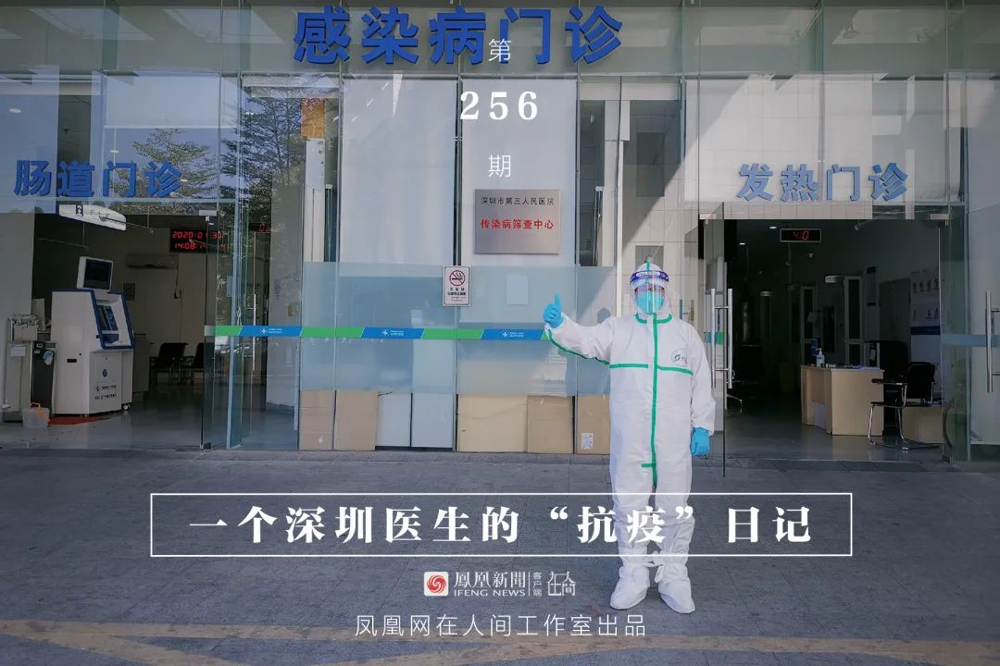
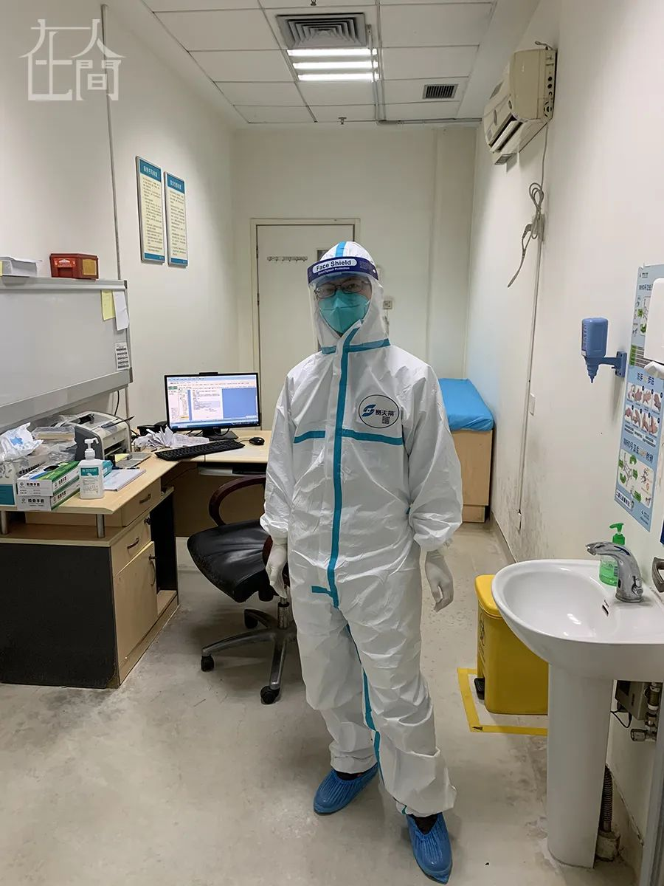
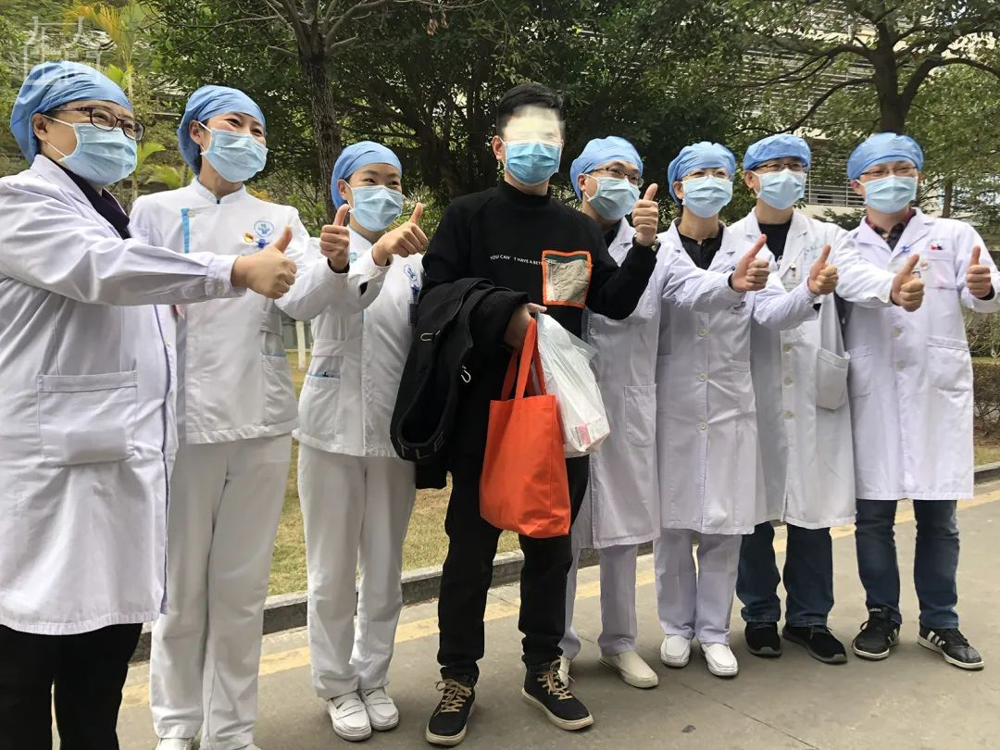
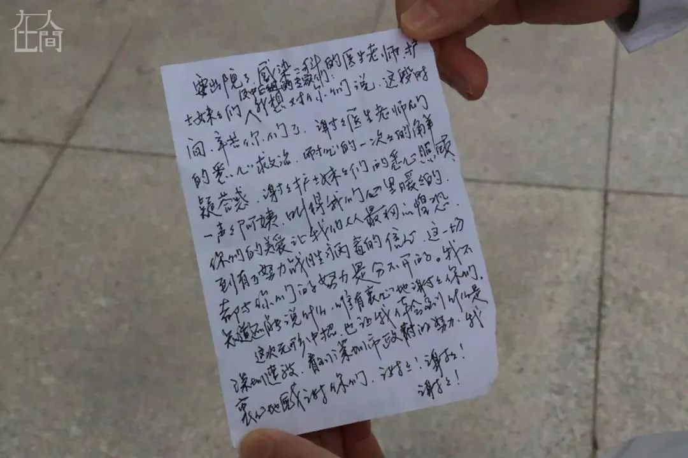
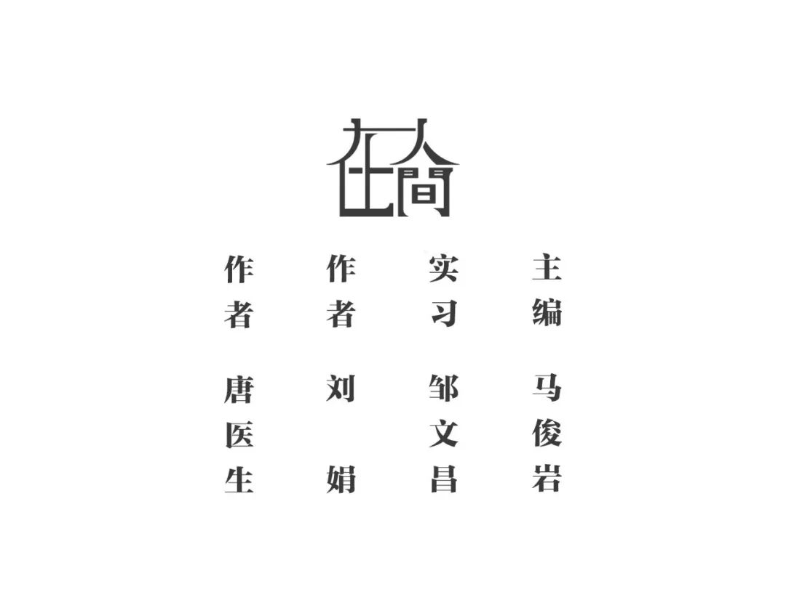

疫情当下，其他疾病患者怎么看病？
原文链接 备份链接 医院呼吁，并不危急的其他疾病患者，可以通过线上咨询、问诊，暂缓前往医院；但该看的病还是要去医院看，千万不要耽误治疗。 记者 | 周 洁 新冠肺炎疫情期间，其他疾病的病人怎么看病？记者连线上海各大医院发现，恢复门诊近一个 …


凤凰新闻客户端 凤凰网在人间工作室出品
打开凤凰新闻客户端，搜索「在人间」并关注
我是深圳市第三人民医院肝病科的一名医生。春运期间，成千上万的武汉人涌入深圳。随着武汉疫情爆发，深圳也成了新冠病毒的“重灾区”。
1月22日上午，我接到院医务科的电话，让我放下手中所有工作，马上前往发热门诊支援。经历过SARS的我意识到：作为深圳市唯一一家新发传染病定点收治医院，我们将直面一场严峻的挑战。

■ 唐医生在门诊。
我赶到发热门诊，发现这里已人满为患。起初由于待诊病人太多，我们无法为所有人做核酸检测、拍胸部CT，只能通过血常规、胸片等简单的检查对患者进行甄别。
大多数待诊患者需要等待3-4个小时才能见到医生，恐惧、焦虑和不满的情绪在诊室外蔓延着。
这是一项比较艰难的工作，我们如履薄冰，因为新冠病毒感染的症状经常很不典型。它是一个非常狡猾的敌人，我们缺乏诊治这类病毒的经验，往往一个错误的决定，就可能放走一个传染源。
由于床位紧缺，不可能将所有的有症状的患者都收进去排查，这也是让我们医生感到为难的地方。（后来，医院几乎腾空了所有病房，这一情况才逐渐得到改观。）

今天，我院新冠肺炎出院人数实现“零”的突破，有两位患者出院，值得庆祝！
我在发热门诊刚支援了两天，也遇到不少令人哭笑不得的事情。
有人稍有点儿咳嗽就被家里人赶出来，说是没查清楚就不要回去；有人从湖北回来，没有任何不舒服，但单位不接收，非要来医院开“证明”；有人来门诊挂号要求买口罩，我说医院不卖口罩，此人便破口大骂；还有些人因为别的病去其它医院治疗，出现发烧便马上被转诊到了我院发热门诊，长时间混杂在一群疑似病人中……
作为医生，我们也有了不同往常的特殊经历。以前大家在单位见了面是各种寒暄，现在见到熟人，第一句话往往是：你好！请问您是哪位？（后来，大家都在防护服上写上了自己的名字。）

■ 唐医生在门诊。
为了帮助大家提高防范意识，也免去逐一解释的麻烦，我在朋友圈发布了“五点声明”：
一、 形式的严峻性不用我再强调了，大家也应该都知道要怎么做。感谢这段时间发信息问候我的亲们！希望所有亲友这次都能够平平安安！
二、 不要再向我打听内部消息了，也请不要托我搞口罩了，我只有用于工作的“限量版”。
三、 我的肝病门诊暂时全部停掉了，估计要等形势缓解以后才会恢复，请病友们谅解！
四、 我虽然一直没怎么说话，但我的心一直关注着正在全国各地战斗着的同学们。再过8个月就是我们毕业20周年聚会的日子，我期待着到时候能见到你们每一个人……2003年抗击SARS，我们中南大学湘雅医学院95级同学都还很年轻，如今许多同学都成了科室里的中坚力量，冲在一线。这既让人骄傲，也让人揪心。此刻，我们更需要有必胜的信心！
五、 我对我父母屏蔽了这条朋友圈，请能接触到他们的亲友帮我保守这个秘密……

过年期间我要一直在发热门诊值班，24小时制，6小时一班，有时需要上夜班。
我妻子在香港大学深圳医院急诊科工作，这段时间也奋战在抗疫一线，住在医院不能回家。年前，我儿子跟外公外婆回老家了，因为疫情一直没有回来，已经20多天没见了。他通过朋友圈关注我的情况，视频通话时总是故作轻松，尽量逗我开心。
因为我经历过SARS，那时有多位医务人员殉职，所以刚去一线时，我还是有些不安，后来看到同事们都勇敢战斗在一线，也就没那么紧张了。
我最害怕自己不小心感染后传染给家人，我父母年纪都大了，万一他们被感染，是非常危险的。他们住在隔壁小区，却不知道我在一线，天天叫我下了班去吃饭，我只好找各种理由搪塞过去。不过他们很清楚，我院是定点收治医院，每天都电话叮嘱我要小心，一定要吃好、休息好、防护好，千万不要感染了。我想在电话里安慰他们几句，但又不知道说什么好，心里很不是滋味。

■ 唐先生和家人的年夜饭。
很高兴能与父母一起平安过除夕，今年的年夜饭虽然没有往年丰盛，但与那些仍然留守在医院的同事相比，我已经非常幸福了，吃什么真的不重要了。此刻，我的心愿是希望跟我的妻儿早日团聚。

■ 除夕值班同事的年夜饭。
在这里还要对所有在除夕夜坚守岗位的同事们表达最诚挚的敬意！祝大家新的一年平安健康，心想事成！
另外，温馨提示一下：请大家不要集中到我们院发热门诊，可到就近的发热门诊筛查，以防增加交叉感染的风险。没有症状的在家观察就好。

前几天，我接诊了一位女性，她和母亲都从湖北过来，母亲发烧，已在我院住院。给她自己查血常规时，我发现她白细胞比较高，胸部CT看不到异常，她自己只是有一点咽痛，不像是冠状病毒感染，估计是扁桃体炎，于是让她回家观察。
等她走后，我总是不放心，因为每放走一个疑似病人，就会给我们的城市增加一分风险。
今天我再次上门诊查了这位患者的记录，准备打电话问问情况，发现她昨天因为嗓子更难受，又来了门诊。这一次胸部CT发现了肺部阴影，于是她被当班医生收治入院。
这件事让我意识到新型冠状病毒的狡猾，在后来的工作中变得谨慎了许多。
随着接触的患者越来越多，我们发现：很多患者没有任何症状，最稳妥的办法就是隔离所有可疑人员。
几天之内，医院几乎腾空了所有的科室，基本上做到了尽收尽治。

■ 唐医生（左）与同事。

我们是定点收治医院，防护用品不是特别紧缺，但都省着用，毕竟不知道需要撑多久。我们都争取一班只用一套防护用品。
发热门诊一个班是6-8个小时，我们在上门诊前两三个小时就不再喝水，上班时基本可以做到不吃、不喝、不上厕所。每次上门诊都感觉很辛苦，这算是在抗疫过程中我觉得最难的事了。
不过我们好歹是坐着，那些在重症监护室的医护同事，要从事大量的体力劳动，又没有水喝，经常累得快要虚脱。
由于面屏、鞋套这些以前看似“冷门”的防护用品，平时储备不多，疫情出现不久便很快用完了。这时，各个科室便自发用塑料膜、橡皮筋和海绵自制了不少面屏，不好用，但解了燃眉之急。
为避免医务人员出现感染，医院做了很多工作，无论门诊还是病房都制定了严格的工作流程。在防护用品方面也是全力保证，虽然一直紧张，但从来没有断供过。
医院每天为大家提供免费饭菜，为一线医护人员安排了酒店，还为我们提供了很多抗病毒和提高免疫力的药物。我们都知道，足够的营养、充分的睡眠和愉悦的心情是免疫力的最大保证。
这段时间大家都尽量吃好、睡好，同事之间少埋怨多帮助，因为保护了同事就是保护了自己。

■ 唐医生（左）和同事。

2月2日，我从发热门诊回到肝病科继续战斗，任务还是治疗新型冠状病毒肺炎患者。病房患者已满，科室里所有医生过年期间都没有休息，我很高兴能回来为大家分担一点儿工作。

■ 出院患者与医护人员合影。
今天刚上班就迎来了我们科第一位出院患者。他1月初去武汉出差，1月中旬返回，之后出现了发热、咳嗽症状，1月21日晚，入院确诊。他不属于重症患者，加上身强力壮、心态乐观，治疗很顺利。


科室今天收到了一家蛋糕店送来的爱心蛋糕，色味俱佳，爱心满满。

还有康复患者给我院写了感谢信，我们看了很欣慰。一位出院患者写道：感谢“深圳速度”，感谢医护团队的悉心照顾。
另一位患者写道：“看到医生们穿着不透气的防护服为我们服务时，我心里非常感动和难受。我不知道他们的姓名，但我知道他们是我们的救命恩人……”
一位老年患者写道：“我看不清医生们的长相，也不知道他们的名字。他们的服务态度和蔼可亲，就像我们的儿女……”
还有许许多多的单位和个人给我院捐赠了各种物资，疫情发生以来，截至2月11日，我院共有344条捐赠记录。当前各行各业都很困难，很感动还有这么多人默默支持我们。
除了防护服、口罩、手套、消毒液等医疗物资，还有给医生们的保健食品。有些热心的市民自发买了水果和干粮，冒着危险来到医院慰问我们。
回到肝病科，在病房工作这段时间，我们科最多时有8位重症患者。今天，他们中的一位治愈出院。
这位病友跟我年龄相仿，刚来时情况还好，但住院过程中反复高烧，并出现呼吸困难，加上他比较胖，症状更明显，只能通过高流量吸氧来维持血氧浓度。
新冠肺炎患者不能有陪护，他每天只能一个人躺在那里吸氧，什么都干不了。我们科室的医务人员都很关心他，每天一上班都会去查看他的检查结果，与专家组讨论治疗方案；每次查房时也都会花很多时间跟他聊天，鼓励他战胜病魔。
幸运的是，这位患者比较乐观，也非常配合治疗，最终脱离了危险并康复出院。

■ 今天，我院有11位患者出院，其中3位来自我们科。
在社会各界的努力下，深圳的疫情逐渐得到了控制，从2月16日开始，全市的新增确诊病例数一直在0和1之间徘徊。
由于新冠肺炎的特殊性，我们科的部分患者出院时遇到了一些意想不到的问题，有的无家可归，有的担心会病情复发，还有的依然牵挂着仍在医院治疗的家人。
一位70岁的患者是湖北人，春节期间来深圳旅游时发病。他病情较轻，出院后突然发现自己无处可去了。之前的招待所直接拒绝了他；新联系的几家酒店，一听说他是湖北人，还是刚出院的病人，都不肯接收。这位老人站在住院部楼下一直打电话，从下午3点打到了天黑……我们了解后也很着急，马上向院领导反映。最后，在医院和当地街道办的协调下，终于联系到一家跟我们医院有合作关系的酒店，将老人安置了下来。
在此之前，另一个病区有位年轻女性患者也出现类似的状况。她母亲在深圳租房住，房东要求她出院后不能去母亲的出租屋，否则就要把她们全家赶出去。
这两位病友都是2月中上旬康复的，当时的政策是出院后居家隔离。从2月19日开始，深圳规定出院的患者到指定地点进行14天的康复隔离观察，这个问题终于得到了解决。
患者在住院期间和出院时都难免出现焦虑情绪。一位女患者总担心自己会变成重症，稍感不适就很紧张。我们医生只好一遍遍地跟她解释：你不是重病人，你的病情已经在好转。临近出院时，她又开始担心将来自己的肺会像当年部分SARS患者一样出现纤维化后遗症，担心离开病房就没有医生管她，担心自己再次被感染……有这样顾虑的病友不少。
其实新冠和SARS不完全一样，普通型患者一般不会出现肺部纤维化。而且我们有了上次SARS的经验，会给病变广泛的患者吃抗纤维化的药，做好提前预防。

■ 唐医生所在的肝病二科全体医护人员合影，摄于2019年11月。
疫情发生以来，我们科一共收治新冠肺炎确诊患者70余例，疑似患者15例。迄今，有68例确诊患者出院。他们离开时，有的人喜悦之情溢于言表，有的人感叹人生无常，有的人觉得命运不公，也有人在为将来的生活发愁。不过，他们在出院时竖起的大拇指是送给我们医务人员最美丽的勋章。

来自深圳卫健委的数据显示，截至3月8日24时，深圳累计报告“新冠肺炎”确诊病例419例。3月8日全市无新增确诊病例，当天出院病例5例。目前深圳仍有在院确诊病例43例，均在我所在的深圳市第三人民医院隔离治疗。
唐医生：
毕业于中南大学湘雅医学院，长期在深圳市第三人民医院从事临床工作，经历过SARS、禽流感等疫情。曾在美国访学一年从事感染性疾病的基础研究，回国不到半年即投入到阻击新冠疫情的第一线。
更多疫情故事，请点击左下角「阅读原文」。



新型肺炎疫情牵动人心，
《在人间》现面向全国网友征稿：
（一） 疫区影像日记
如果你身处疫区
请你用照片（视频）和文字记录
你所听闻和见到的一切
照片不少于3张
文字不少于300字
投稿方式：微信联系人间君（zairenjianliving）
（二）抗击疫情真实故事
无论你是一线医护人员、志愿者、
确诊或疑似患者及家属、已治愈出院人士等等，
如果希望讲述疫情相关经历，
请微信联系人间君（zairenjianliving）

原文链接 备份链接 医院呼吁，并不危急的其他疾病患者，可以通过线上咨询、问诊，暂缓前往医院；但该看的病还是要去医院看，千万不要耽误治疗。 记者 | 周 洁 新冠肺炎疫情期间，其他疾病的病人怎么看病？记者连线上海各大医院发现，恢复门诊近一个 …
原文链接 备份链接 从线下到线上，从疫情时期到常规医疗，天津“微医模式”或将成为各地参考借鉴的范例。 全文5588字，阅读约需11分钟 从大年初一开始，天津医院感染免疫科副主任刘秀婵有了两个新身份。 穿上防护服戴上口罩，她是支援天津医院 …
原文链接 备份链接 受疫情期间影响，多地医保快速开通互联网医疗支付业务，但这距离行业的春天或许还远，长期的“医保份额”划定仍是瓶颈，找到其他的买单方也在探索期 文 |《财经》记者 辛颖 俞燕 编辑 | 王小 “我印象最深的线上问诊的提问 …
原文链接 备份链接 凌晨，尿毒症患者小黄鸟终于做完了透析回到家；身在湖北的Iris突发胆囊疾病，因疫情生扛2天后终于决定就医；北京的周迎夫妇每日如坐针毡，不知道因疫情推后的恶性肿瘤手术何时能开始…… 抗击新冠肺炎是一场全民的战争。然而，在 …
原文链接 备份链接 口述实录·火线 养兵千日用在一时，大型公共卫生事件一发生，这些关键的“苦”学科就会为国计民生，甚至民族存亡提供重要保障。 记者｜黄 祺 武汉新冠肺炎的救治压力趋缓，无论是普通市民还是医护人员，都期待着疫情彻底结束的这一 …